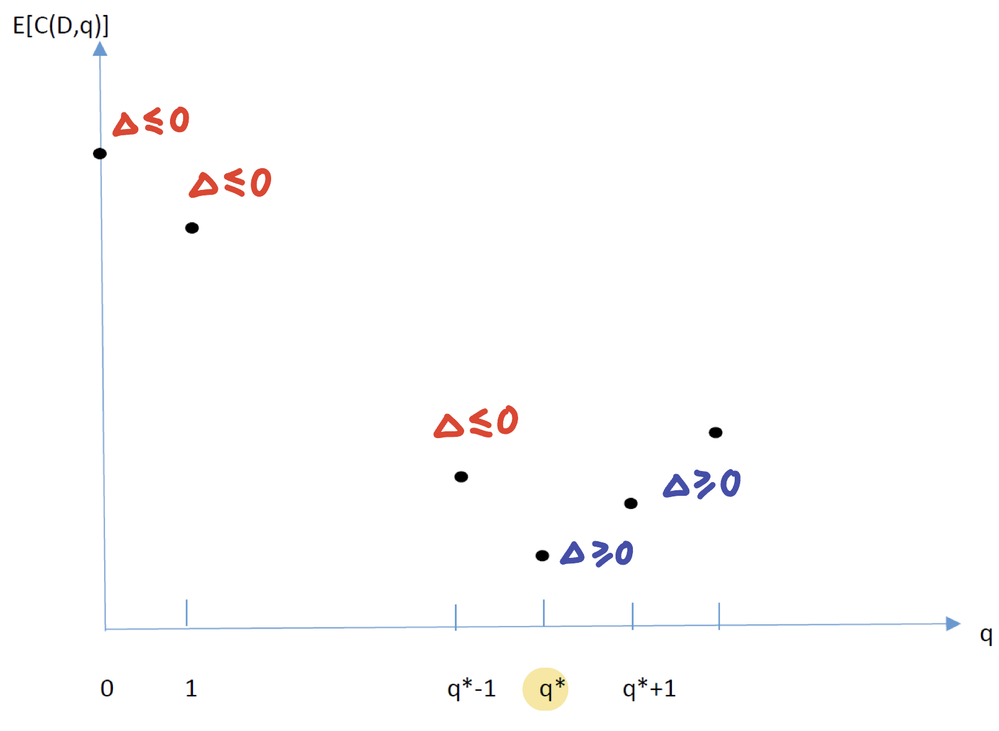

Newsvender Problem - Single Period Inventory Policy
Consider perishable items such as fruits
- These perishable items should be removed at the end of each single period
- Getting rid of leftover items may cost money. Even if there is any positive salvage value, it is smaller than the ordering cost
- If order too many items, there will be many left-over items.
- If order too few, we lose potential sales.
Newsvendor problem is to find the ordering quantity that maximizes profit or minimizes cost.
2. Notation and Problem
- Di= demand at period i (r.v.)
- q= ordering quantity
- P(D,q)= profit for one period when we order q and demand is D;
- C(D,q)= cost for one period when we order q and demand is D;
Since Di is a r.v., we cannot solve maxqP(Di,q).
Instead, if during n periods (n is large), the distribution of Di does not change and we order the same quantity q every period, we can solve:
qmaxn1i=1∑nP(Di,q)=E[P(D,q)]
(equality keeps because of SLLN(Strong law of large number))
Equally, minimizing cost is equal to maximizing benefit, therefore we have
qminE[C(D,q)]
3. Discrete Demand
As E[C(D,q)] is a function of q only, we denote g(q)=E[C(D,q)],Δ=g(q+1)−g(q)
From the following picture, we have
Find q*⟺Find first q that make Δ≥0

Marginal Analysis
(1) If d≤q, overstock: C1(d,q)=coq+(p1d+k)
(2) If d>q, understock: C2(d,q)=−cuq+(p2d+k)
- co is called overage cost: how much do we lost when ordering one more item in overstock case
- cu is called underage cost: how much do we gain when ordering one more item in understock case
Example: 报纸进货价 $0.5, 售价 $1.5. 每周的需求 d 分布如下，剩下没卖完的报纸直接扔掉
| d |
20 |
25 |
30 |
35 |
| p(d) |
0.1 |
0.2 |
0.4 |
0.3 |
- If d≤q, overstock: C1(d,q)=0.5q−1.5d
- If d>q, understock: C2(d,q)=0.5q−1.5q=−q
Therefore we have co=0.5,cu=1
Newsvendor Ratio
Accroding to the definition of co,cu
Δ=g(q+1)−g(q)=E[C(D,q+1)−C(D,q)]={co−cuif q≤dif q>d
E[Δ]=coPr(D≤q)−cuPr(D>q)=coF(q)−cu(1−F(q))
这里有必要说明一下，因为上图中的函数是 E[C(D,q)]，所以它的导数为 E[Δ] 而不是 Δ
When E[Δ] firstly reach 0 as q increasing, we call the accroding F(q) as Newsvendor Ratio
F(q∗)=co+cucu
因此第一个使 F(q) 大于 Newsvendor Ratio 的 q 即为 q∗
Example continous:
| d |
20 |
25 |
30 |
35 |
| p(d) |
0.1 |
0.2 |
0.4 |
0.3 |
| F(d) |
0.1 |
0.3 |
0.7 |
1 |
Since F(q∗)=cu/(co+cu)=2/3, we find that q∗=30 is the first time that make F(q)>2/3
4. Continuous Demand
与 Discrete Demand 相同，即通过 C1(q,q)=C2(q,q) 可得:
q∗=F−1(co+cucu)
然后再四舍五入取整. 计算 expected cost:
E[cost]=∫0aqC1(d,q)f(d)dd+∫aq∞C2(d,q)f(d)dd